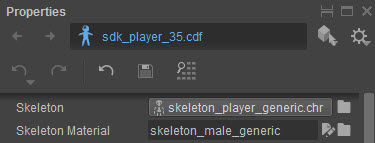

Обзор
Панель «Свойства» позволяет изменять сценарии определения персонажей и настраивать определенные дополнительные параметры различных ресурсов, участвующих в создании персонажей. Эти дополнительные свойства обычно хранятся в отдельных скриптах рядом с реальным файлом ресурса.
Ниже вы можете найти описания параметров для всех доступных типов активов:
Заголовок панели свойств
Заголовок панели свойств всегда один и тот же, независимо от типа актива, редактируемого в данный момент.

| Кнопка/опция | Описание |
|---|---|
Вернитесь к ранее выбранному активу. | |
Перейдите к следующему выбранному активу. | |
Имя редактируемого в данный момент актива. Звездочка рядом с именем файла сигнализирует о том, что некоторые свойства изменены и отличаются от того, что в данный момент хранится в файле на диске. | |
| |
Изменить режим отображения списка прикрепленных персонажей.
| |
Отменить последнее изменение свойства. | |
Повторите ранее отмененное изменение свойства. | |
Отмените все изменения и вернитесь к последнему сохраненному состоянию. | |
Сохраните все изменения свойств. | |
Отображение местоположения редактируемого в данный момент файла ресурса в проводнике Windows. |
Свойства персонажа
Эти свойства отображаются только при редактировании определения символа.
| Вариант | Описание |
|---|---|
| Скелет | Скелет, который будет использоваться персонажем. |
| Материал скелета | Материал, который будет использоваться для геометрии, хранится в файле скелета. Хотя этот рабочий процесс по-прежнему поддерживается, геометрию персонажа обычно следует хранить в отдельных ресурсах скина и привязывать к персонажу с помощью вложений скина. |
Вложения
Список прикрепленных персонажей. Кнопка рядом с Вложения позволяет добавить новое вложение к вашему персонажу. Доступно 6 типов вложений, каждый из которых имеет свои особые свойства:
Совместное крепление
Совместные вложения позволяют вам определять сокеты, связанные со скелетной иерархией персонажа, к которым могут быть подключены различные объекты.
| Вариант | Описание |
|---|---|
| Имя | Имя вложения. |
| Тип | Тип крепления (Совместное крепление). |
| Совместное | Сустав скелета, к которому прикреплено приспособление. |
| Геометрия | Объект, который будет подключен к этому сокету вложения. Может быть *.cgf, *.компьютер, *.чр или другой *.cdf-актив. Можно изменить на время выполнения. |
| Материал | Материал, который будет использоваться при рендеринге прикрепленного объекта. Может быть изменено во время выполнения. |
| Множитель расстояния просмотра | Дополнительный параметр LoD для тонкой настройки выбора геометрии подключаемого объекта. |
| Позиция магазина | Указывает, как будет располагаться вложение.
|
| Ротация магазинов | Указывает, как вложение будет быть ориентированным.
|
Трансформировать
| Вариант | Описание |
|---|---|
| Т | Позиционное смещение навесного оборудования относительно его Позиция магазина. |
| Р | Вращательное смещение насадки, выраженное в градусах, относительно ее Ротация магазинов. |
| Моделирование | Включить SIM-картуУсовершенствованная физическая симуляция для генерации движения приспособления в ответ на движение персонажа. ТСимуляция эффективна, но не будет взаимодействовать с объектами, окружающими персонажа в игре. |
| Скрытый | Сделайте это вложение скрытым по умолчанию при появлении нового персонажа в игре. Это предотвращает визуализацию прикрепленного объекта. |
| Физические лучи | Заставьте это вложение участвовать в тестах пересечения лучей. |
| Физические столкновения | Заставьте это приспособление участвовать в тестах на физическое столкновение. |
Физика веревки/ткани
Включите полную физическую симуляцию для этого вложения. Это менее эффективно, чем алгоритм, используемый Моделирование свойство, но будет учитывать столкновения с объектами, окружающими персонажа в игре.
| Вариант | Описание |
|---|---|
| Тип |
|
Насадка для лица
Face Attachments предоставляют те же функции, что и Совместные приложения, но привязаны к геометрии персонажа (лицо сетки), а не к его скелетной иерархии.
| Вариант | Описание |
|---|---|
| Имя | Имя вложения. |
| Тип | Тип крепления (Прикрепление к лицу). |
| Геометрия | Объект, который будет подключен к этому сокету вложения. Может быть *.cgf, *.компьютер, *.чр или другой *.cdf-актив. Можно изменить на время выполнения. |
| Материал | Материал, который будет использоваться при рендеринге прикрепленного объекта. Может быть изменено во время выполнения. |
| Множитель расстояния просмотра | Дополнительный параметр LoD для тонкой настройки выбора геометрии подключаемого объекта. |
Трансформировать
| Вариант | Описание |
|---|---|
| Т | Позиционное смещение насадки. |
| Р | Смещение вращения насадки, выраженное в градусах. |
| Моделирование | Включить SIM-картуУсовершенствованная физическая симуляция для генерации движения приспособления в ответ на движение персонажа. ТСимуляция эффективна, но не будет взаимодействовать с объектами, окружающими персонажа в игре. |
| Скрытый | Сделайте это вложение скрытым по умолчанию при появлении нового персонажа в игре. Это предотвращает визуализацию прикрепленного объекта. |
| Физические лучи | Заставьте это вложение участвовать в тестах пересечения лучей. |
| Физические столкновения | Заставьте это приспособление участвовать в тестах на физическое столкновение. |
Крепление кожи
Вложения скинов позволяют соединить сетку со скинами непосредственно с соответствующими костями скелетной иерархии персонажа.
| Вариант | Описание |
|---|---|
| Имя | Имя вложения. |
| Тип | Тип прикрепления (Skin Attachment). |
| Геометрия | Файл *.skin, содержащий сетку со скинами. |
| Материал | Материал, который будет использоваться при рендеринге геометрии кожи. |
| Множитель расстояния просмотра | Дополнительный параметр LoD для тонкой настройки выбора геометрии скина. |
| Метод снятия шкур | Алгоритм скиннинга, который будет использоваться для деформации геометрии:
|
| Скрытый | Сделайте это вложение скрытым по умолчанию при появлении нового персонажа в игре. Это предотвращает скиннинг и рендеринг прикрепленной геометрии. |
Прокси-приложение
Вложения прокси позволяют вам определять физические прокси и связывать их со скелетной иерархией персонажа. Физические прокси взаимодействуют с другими типами вложений и используются для тонкой настройки поведения VCloth привязанность и любые вложения, использующие Моделирование собственность.
| Вариант | Описание |
|---|---|
| Имя | Имя вложения. |
| Тип | Тип вложения (прокси-вложение). |
| Совместное | Сустав скелета, к которому прикреплено приспособление. |
| Позиция магазина | Указывает, как будет располагаться вложение.
|
| Ротация магазинов | Указывает, как будет ориентировано вложение.
|
Трансформировать
| Вариант | Описание |
|---|---|
| Т | Позиционное смещение навесного оборудования относительно его Позиция магазина. |
| Р | Вращательное смещение насадки, выраженное в градусах, относительно ее Ротация магазинов. |
| Цель | Указывает, с чем должен взаимодействовать прокси.
|
Леденцы
| Вариант | Описание |
|---|---|
| Ширина границы | Ширина границы прокси. |
| Размер Х | Длина прокси по оси X. |
| Размер Y | Длина прокси по оси Y. |
| Размер Z | Длина прокси по оси Z. |
Приложение PROw
| Вариант | Описание |
|---|---|
| Имя | Имя вложения. |
| Тип | Тип вложения (PRow Attachment). |
| Имя соединения строк | Первый сустав в первом ряду крепления. |
| Режим зажима | Определяет стиль ограничения движения маятников. |
| Настройка отладки | Включает отладочную визуализацию маятников для целей отладки. |
| Текст отладки | Показывает информацию об отладке. |
| Активировать симуляцию | Включает симуляцию. |
| Моделирование FPS | Определяет частоту кадров, с которой обновляется физическая симуляция. Можно выбрать значения от 10 до 255. В случае с тканью маятника выбранное значение на самом деле является реальным физическим обновлением в секунду. Более того, при фиксированной частоте кадров симуляция будет более детерминированной. Если выбрано значение по умолчанию 10, то на каждый кадр рендеринга будет не более 10 обновлений физики. Если разница между частотой кадров рендеринга и симуляции велика, то частота кадров симуляции может демонстрировать некоторое подтормаживание — такое подтормаживание может быть визуально очень неприятным. Поэтому рекомендуется установить частоту кадров моделирования в диапазоне от 30 до 60 кадров в секунду. Если в игре используется фиксированная частота кадров, то в идеале физика должна использовать ту же частоту кадров. |
| Масса | Определяет массу качания маятника и long, как совместная пружина равен 0, то масса не влияет на период колебаний. |
| Гравитация | Значение по умолчанию 9,81 м/сек. — стандартное ускорение падающих объектов под действием силы тяжести, действующей на Землю. Хотя масса боба не влияет на колебания маятника, сила тяжести влияет. |
| Демпфирование | Это значение можно использовать для моделирования силы, зависящие от скорости, например сопротивление воздуха. Таким образом, чем быстрее движется объект, тем с большим трением воздуха он сталкивается. Это означает, что сила трения замедляет объект со скоростью, пропорциональной скорости, следовательно, более высокие значения демпфирования заставят колеблющиеся объекты быстрее остановиться. |
| Совместная весна | Это значение можно использовать для моделирования силы, зависящие от положения, и представляет собой значение от 0 до 999, применяемое к сферическому суставу. Чем дальше маятник отклоняется от оси весенняя мишень, то тем сильнее он пытается вернуться. Значение 0 не оказывает пружинящего эффекта, поэтому в состоянии покоя маятник будет висеть вниз. Чем выше значение, тем быстрее боб колеблется и притягивается к Весенняя цель, который может указывать в любом направлении. Важно отметить, что натяжение пружины является силой, противодействующей массе и гравитации, и что более высокая масса всегда будет тянуть боб вниз. |
| Угол конуса | Движение маятника можно ограничить тремя ограничивающими объемами: конусом, полуконусом и шарнирной плоскостью. Этот ползунок позволяет выбрать угол открытия конуса, полуконуса или шарнирной плоскости и по умолчанию установлен на 45 градусов. Доступен диапазон углов (0–179), а значения, превышающие 90 градусов, создают обратный конус. |
| Вращение конуса | Обеспечивает вращение конуса, полуконуса и шарнирной плоскости относительно шарнира. |
| Длина стержня | Определяет длину стержня. Длина стержня оказывает большое влияние на частоту качания маятника, поэтому чем длиннее стержень, тем больше времени потребуется маятнику на колебания вперед и назад. |
| Весенняя цель | Параметры весенняя мишень и совместная пружина тесно связаны, и где целевой пружиной является ось относительно оси X сустава. Кроме того, в распоряжении пользователя имеются две плоскости вращения, которые позволяют целевой оси пружины вращаться вокруг оси моделирования – таким образом можно достичь любого положения как внутри, так и снаружи конуса, полуконуса или шарнирной плоскости. |
| Турбулентность | Это модуляция значения демпфирования, основанная на скорости движения персонажа. Первое значение контролирует частоту, второе — амплитуду, а с помощью функции турбулентности к моделированию можно добавить тонкий шум для имитации таких элементов, как воздействие ветра на ткань. |
| Максимальная скорость | Качание маятника может достигать очень высоких скоростей, особенно когда персонаж резко меняет позу или телепортируется из одного положения в другое. Ограничение скорости предотвращает появление больших импульсов, которые могут привести симуляцию в неконтролируемое состояние. |
| Цикл | Ткань Pendula работает на основе соединения, имеющего прямоугольную решетчатую структуру. В случае с накидками и пальто левая и правая стороны сетки не соединяются друг с другом. Однако в случае с юбками все маятники необходимо соединить по горизонтальной оси. Активировав Цикл установите флажок: последнее соединение в строке соединяется с первым соединением в строке. Следовательно, ряд на самом деле представляет собой круг маятников. |
| Растянуть | Это значение используется для определения сколько ткань может растягиваться по горизонтали. Значение 0 (в сочетании с высоким значением для «Петли релаксации») обеспечивает фиксированное горизонтальное расстояние между маятниками. Значение 0,2 означает, что расстояние может растягиваться или уменьшаться на 20%. Горизонтальное «расстояние по умолчанию» — это расстояние между суставами в позе по умолчанию. |
| Релаксационные петли | В этом методе используется итеративный подход, позволяющий удерживать маятники вместе и в горизонтальном ряду. Каждая итерация сближает их, и это происходит в каждом кадре. В большинстве случаев рекомендуется значение 2–4. |
| Капсула | Обнаружение столкновений — это простой тест на перекрытие ромба и капсулы или сферы. Чтобы включить обнаружение столкновений для строки маятника, синие проксисначала необходимо настроить. Каждый сустав в ряду маятника может иметь Капсула для обнаружения столкновений и один конец капсулы всегда соединен с шарниром (поворотом), это означает, что вы можете изменить только длина вдоль оси стержня и радиуса. Изменение этих значений приведет к изменению капсулы для всей строки. |
| Тип проекции | Если вы выберете Тип проекции, он активирует список для Доступные прокси-серверы столкновений. Эти прокси применяются для всего ряда капсул. Реакция на столкновение была описана в предыдущем разделе под Включение обнаружения столкновений. |
VCloth 2.0 Вложение
| Параметр | Описание |
|---|---|
| Имя | Имя вложения. |
| Тип | Тип прикрепления (один из описанных здесь типов). |
Управление анимацией
Параметр | Описание | Рекомендуемое значение/диапазон |
|---|---|---|
Принудительное снятие шкур | Пропускает этап симуляции и принудительно применяет скин для ткани — полезно для отладки. | |
Принудительное снятие шкур FPS Треш | Если частота кадров игры/редактора падает ниже заданного FPS, симуляция пропускается и применяется принудительное использование скинов. Его следует использовать в качестве порога устойчивости. Если частота кадров сильно падает, не следует тратить время на симуляцию ткани, это еще больше замедлит игру. | 20 |
Принудительное скинирование Translate Thresh | Если расстояние перевода на кадр превышает заданный порог, моделирование пропускается и применяется обработка скинов. Таким образом, можно было бы обрабатывать прыжки/лучи персонажей без странных побочных эффектов симуляции ткани. | 0.5 |
Проверьте перемотку анимации | Сбросьте позиции частиц на позиции со скинами. Если в анимации происходит скачок времени (например, при перемотке анимации назад). Полезно для отладки анимации, поскольку в таких случаях обнаруживается перезапуск анимации и ткань сбрасывается. | |
Отключить симуляцию на расстоянии | Отключить симуляцию/включить скининг в зависимости от расстояния до камеры (расстояния до мира). Если расстояние до камеры превышает этот порог, имитируемая ткань превращается в шкуру, чтобы повысить производительность и не тратить время на персонажей, находящихся далеко. Установите значение 0,0, чтобы отключить. | 10.0 |
Отключить временной диапазон моделирования | Определяет физическое время [в секундах], которое используется для плавного перехода между симуляцией и скиннингом, например. 0,5 подразумевает полсекунды для затухания. | 0.3 - 0.5 |
Включить симуляцию размера SS | Если размер ограничивающих рамок персонажей в экранном пространстве превышает этот процент от размера области просмотра, включается симуляция Vcloth. Таким образом, моделированием Vcloth можно управлять в соответствии с фактическим размером персонажей на экране. Это значение используется отдельно для направлений X и Y. |
Параметр | Описание | Рекомендуемое значение/диапазон |
|---|---|---|
Временной шаг | Временной шаг физического моделирования — максимальный временной шаг, который используется в рамках подшага моделирования ткани. | 0.007 -0.01 |
Макс. итерация временного шага | Максимальное количество итераций для дискретизации времени между двумя кадрами. Если количество подшагов превышает этот порог, моделирование прерывается. | 30 |
Сборка/Итерации жесткости | Количество итераций жесткости/столкновений за временной шаг. На каждом подшаге решатель столкновений и жесткости выполняется несколько раз для повышения жесткости и устойчивости. | 5 |
Столкновение на каждом n-м шаге | Во время итераций жесткости/столкновений разрешайте столкновения только на каждом n-м шаге. 0 отключает столкновения. Улучшите производительность, изменив номер. ступеней столкновения по отношению к ступеням жесткости. Меньше – значит быстрее, но менее подвержено столкновениям. Работает относительно предыдущего параметра, Сборка/Итерации жесткости. Например. 2 означает, что при двух шагах жесткости выполняется один шаг столкновения. Установите значение 0,0, чтобы отключить. | 2 |
Коэффициент сдвига при множественных столкновениях | При одновременном многократном столкновении частица смещается на этот коэффициент в среднее направление. 0.0 отключает обработку множественных коллизий. На данный момент обрабатывается максимум 2 одновременных коллизии. Это значение становится важным, если несколько прокси-серверов столкновения пересекаются (например, в коленях). Если столкновения не обрабатываются убедительно, увеличьте это значение. Установите значение 0,0, чтобы отключить. | В зависимости от настроек прокси: 0,0–1,0. (включается только в том случае, если во время анимации возникают проблемы в области пересечений на прокси) |
Фактор гравитации | Определяет интенсивность гравитации. Этот фактор умножается на гравитацию. Этот параметр можно использовать для настройки веса ткани. | 0.1 - 0.5 (обычно пониженная гравитация выглядит хорошо и гораздо более стабильна) |
Дополнительную информацию о временном шаге см. здесь.
Жесткость и эластичность
Параметр | Описание | Рекомендуемое значение/диапазон |
|---|---|---|
Растягивающаяся жесткость | Определите прочность на растяжение: меньшие значения указывают на меньшую жесткость, большие значения указывают на более высокую жесткость. Значение 0,0 отключает жесткость растяжения. Установите значение 0,0, чтобы отключить. | 0.1 - 1.0 |
Сдвиговая жесткость | Определите прочность на сдвиг: меньшие значения указывают на меньшую жесткость, большие значения указывают на более высокую жесткость. Значение 0,0 отключает жесткость сдвига. Установите значение 0,0, чтобы отключить. | 0.1 - 1.0 |
Жесткость изгиба | Определите прочность на изгиб: меньшие значения указывают на меньшую жесткость, большие значения указывают на более высокую жесткость. Значение 0,0 отключает жесткость изгиба. Установите значение 0,0, чтобы отключить. | 0.1 - 1.0 |
Жесткость изгиба по углу | Жесткость на изгиб зависит от углов треугольника. Следовательно, эта жесткость при изгибе не влияет на эластичность. Этот параметр действует аналогично предыдущему параметру, но не использует пружины для определения жесткости изгиба. Скорее, он работает непосредственно с соседними треугольниками и соответствующими им углами. Значение 0,0 отключает жесткость изгиба по углу. Установите значение 0,0, чтобы отключить. | 0.0 - 1.0 Если вас устраивает нормальная жесткость на изгиб, ее следует отключить, так как она дороже. |
Тяговая жесткость | Сила притягивания зажатых вершин к их определенному положению со скинами. Также используется для параметра Макс. расстояние до кожи (см. ниже). Этот параметр позволяет улучшить жесткость без снижения устойчивости. Установите значение 0,0, чтобы отключить. | 0.0 - 1.0 |
Трение и демпфирование
Параметр | Описание | Рекомендуемое значение/диапазон |
|---|---|---|
Трение | Глобальное трение. Простое трение. Это значение уменьшает скорость частиц линейно. Небольшое значение трения обычно необходимо из соображений стабильности. | В качестве отправной точки: 0,01. Затем медленно уменьшайте, чтобы увеличить динамику. |
Жесткое демпфирование | Специальное демпфирование: чем выше это значение, тем более жесткой выглядит ткань. 0.0 означает отсутствие демпфирования, 1.0 представляет собой жесткую ткань. | В качестве отправной точки: 0.03 Затем медленно уменьшайте, чтобы увеличить динамику. |
Ограничения на расстояние до ближайшего соседа
Параметр | Описание | Рекомендуемое значение/диапазон |
|---|---|---|
Ограничения на расстояние до ближайшего соседа | Включает NNDC для повышения жесткости при одновременном снижении эластичности. | |
NNDC максимальный коэффициент сдвига | Масштабирует максимальный сдвиг за итерацию в направлении ближайшего соседа, например. 0.5 -> на полпути к ближайшему соседу. Меньшие значения приводят к более высокой стабильности. | 0.1 - 0.4 |
NNDC сдвиг коэффициента столкновения | Масштабируется в случае смещения скорости, 0.0 = нет смещения, 1.0 = нет изменения скорости, -1 = увеличить скорость путем изменения. | Обычно должно быть 1.0, в противном случае могут возникнуть проблемы со стабильностью. Изменяйте значение только в случае мерцания из-за NNDC. |
NNDC разрешено расширение | Разрешенное расширение для ближайшего Ограничения на расстояние до соседей, например 0.1 = 10% Установите значение 0,0, чтобы отключить. | 0.0 - 1.0 |
Дополнительно
Параметр | Описание | Рекомендуемое значение/диапазон |
|---|---|---|
| Макс. расстояние до кожи | Максимально допустимое расстояние частиц от места со снятой шкурой. Порог максимального расстояния между сеткой моделирования и тканью со шкурой. Может использоваться для удержания ткани «на месте». Установите значение 0,0, чтобы отключить. | 0.0 |
| Сетчатый фильтр Лапласа | Включает фильтр сглаживания Лапласа после обработки для сетки моделирования. Принимайте значения от 0 до 1, где 0,0 означает отсутствие фильтрации, а 1,0 — полную фильтрацию. Установите значение 0,0, чтобы отключить. | 0.0 (иначе это может быть дорого) |
Сбросить демпфирование
Параметр | Описание | Рекомендуемое значение/диапазон |
|---|---|---|
| Сбросить демпфирование N кадров | Демпфирует скорость частиц на N кадров после сброса, чтобы предотвратить сильное трепетание ткани. При инициализации ткани для данного количества кадров ткань дополнительно демпфируется, чтобы ткань осела. | 3 |
| Сбросить коэффициент демпфирования | Сила начального демпфирования (связана с предыдущим параметром). | 0.0 (т.е. сильное демпфирование) |
Файлы
| Параметр | Описание |
|---|---|
| renderMeshName | Имя сетки рендеринга (например, «my_cloth_render»). |
| Связывание | Путь к файлу оформления рендеринга (например, «characters/my_player/attachments/vcloth/my_player_my_cloth_render.skin»). |
| simMeshName | Имя сетки моделирования (например, «my_cloth_sim»). |
| simBinding | Путь к файлу скина моделирования (например, «characters/my_player/attachments/vcloth/my_player_my_cloth_sim.skin»). |
| материал | Путь к файлу материала (например, «characters/my_player/materials/my_player_material.mtl»). |
Отладка
См. здесь для получения дополнительной информации.
Свойства скелета
Эти свойства отображаются только при редактировании скелетного ресурса и сохраняются в скрипте .chrparams рядом с ним. Свойства скелета в основном используются для определения набора анимации, связанного со скелетом.
| Вариант | Описание |
|---|---|
| Включает | Другие сценарии .chrparams для включения наборов анимаций. Это можно использовать для повторного использования наборов анимаций в разных скелетах. |
| Фильтр набора анимации | Список правил, определяющих, какие анимации должны принадлежать набору, связанному с этим скелетом. Каждое правило состоит из пути к базовому каталогу и списка шаблонов подстановочных знаков для сопоставления файлов в этом каталоге. Имена анимации генерируются на основе соответствия шаблона подстановочных знаков соответствующим именам файлов. |
| Файл анимационных событий | Путь к скрипту .animevents, хранящему события анимации для набора анимации этого скелета. |
| DBA Путь | Путь к каталогу, содержащему файлы DBA, связанные с этим скелетом. Все анимационные клипы, содержащиеся в DBA, найденных в этом каталоге, будут включены в набор анимации этого скелета. Ассоциация DBA не зависит от Фильтр набора анимации и необходим для того, чтобы клипы DBA могли использоваться персонажами, созданными с использованием этого скелета. |
| Отдельные администраторы баз данных | Список дополнительных файлов DBA, дополняющих найденные с помощью DBA Путь.
|
Свойства анимации
Эти свойства отображаются только при редактировании анимационного ресурса и сохраняются в скрипте .animsettings рядом с ним. Свойства анимации в основном используются для указания параметров предварительной обработки и сжатия. В зависимости от ситуации вам, возможно, придется нажать кнопку Создать новый AnimSettings кнопку сначала.
| Вариант | Описание |
|---|---|
| Добавка | Включите этап предварительной обработки аддитивного движения для этого анимационного актива. |
| Скелет псевдоним | Скелет, использованный для создания этого анимационного ресурса. Используется для извлечения движения и фильтрации контроллера. |
| Теги | Список пользовательских тегов пользователя. |
Сжатие
| Вариант | Описание |
|---|---|
| Значение сжатия | Общие настройки качества для алгоритма сжатия с потерями. Меньше = более высокая точность, больший размер файла. |
Порог автоматического удаления контроллера
Пороговые значения для определенных типов контроллеров, при которых контроллеры анимации будут полностью удалены на этапе сжатия.
| Вариант | Описание |
|---|---|
| Позиция | Порог удаления регуляторов положения. |
| Вращение | Удаление порога для контроллеров вращения. |
| Масштаб | Порог удаления для контроллеров весов. |
Настройки для каждого соединения
Предоставляет возможность точной настройки параметров сжатия для каждого контроллера.
В раскрывающемся списке указывается, следует ли безоговорочно сохранить или удалить контроллер.
Числовое поле предоставляет дополнительный множитель, применяемый к общему значению. Значение сжатия.
Сжатие (анимация)
Предварительные настройки сжатия
Список глобальных настроек сжатия для анимационных ресурсов. Каждую запись можно настроить со следующими параметрами:
| Вариант | Описание |
|---|---|
| Имя | Имя предустановки сжатия. |
| Фильтр | Сопределяет, на какие анимационные ресурсы должен влиять этот пресет. Фильтр может состоять из набора правил, основанных на именах файлов, каталогах, связанных псевдонимах скелета и пользовательских тегах.. |
Настройки
| Вариант | Описание |
|---|---|
| Значение сжатия | Общие настройки качества для алгоритма сжатия с потерями. Меньше = более высокая точность, больший размер файла. |
Порог автоматического удаления контроллера
Пороговые значения для определенных типов контроллеров, при которых контроллеры анимации будут полностью удалены на этапе сжатия.
| Вариант | Описание |
|---|---|
| Позиция | Порог удаления регуляторов положения. |
| Вращение | Удаление порога для контроллеров вращения. |
| Масштаб | Порог удаления для контроллеров весов. |
Настройки для каждого соединения
Предоставляет возможность точной настройки параметров сжатия для каждого контроллера.
В раскрывающемся списке указывается, следует ли безоговорочно сохранить или удалить контроллер.
Числовое поле предоставляет дополнительный множитель, применяемый к общему значению. Значение сжатия.
Соответствие локальной анимации
Перечисляет все анимационные ресурсы, которые в данный момент сопоставлены с Фильтр и на него будет влиять эта предустановка сжатия.
DBA Таблица
Список определений файлов DBA. Каждую запись можно настроить со следующими параметрами:
| Вариант | Описание |
|---|---|
| Путь | Выходной путь для файла DBA. |
| Фильтр | Сопределяет, на какие анимационные ресурсы должен влиять этот пресет. Фильтр может состоять из набора правил, основанных на именах файлов, каталогах, связанных псевдонимах скелета и пользовательских тегах.. |
Соответствие локальной анимации
Перечисляет все анимационные ресурсы, которые в данный момент сопоставлены с Фильтр и будет включен в сгенерированный файл DBA.
Список скелетов
Список псевдонимов скелетов. Каждая запись сопоставляет псевдоним скелета со скелетным активом.
Обратите внимание, что вы можете скопировать и вставить каждое из свойств, а также отфильтровать список свойств, используя контекстное меню, вызываемое правой кнопкой мыши!
Похожие страницы
Для получения дополнительной информации о том, как использовать VCloth, посетите следующие страницы: